Launch EC2 Instance
In this step, we’ll launch an EC2 instance that will host our Node.js application. This instance will be configured with the necessary software and permissions to interact with our caching layers.
Step 1: Navigate to EC2 Console
- Open the AWS Management Console
- Navigate to the EC2 service
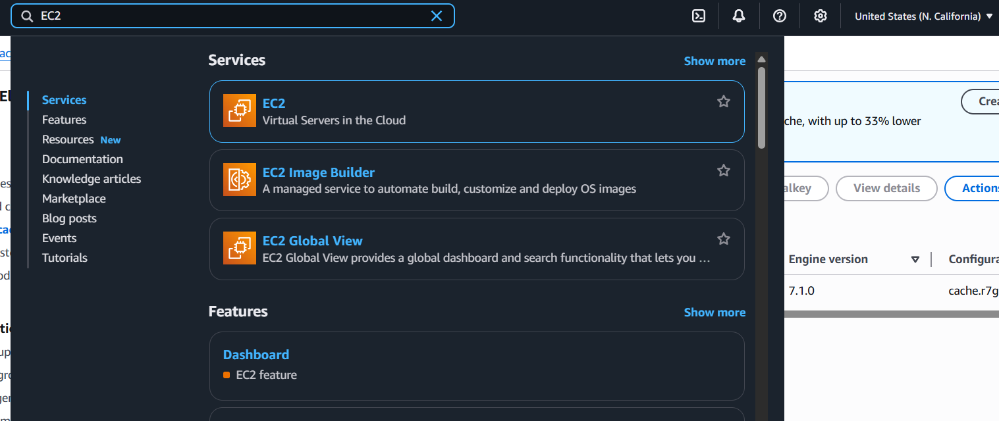
- Click Launch Instance
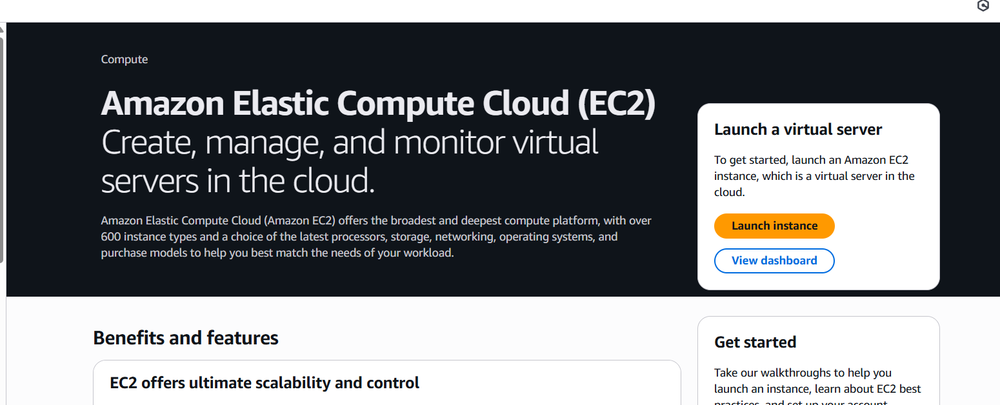
Step 2: Configure Instance Details
Basic Configuration
-
Configure the basic instance settings:
- Name:
caching-app-server - Application and OS Images: Amazon Linux 2023 AMI
- Architecture: 64-bit (x86)
- Name:
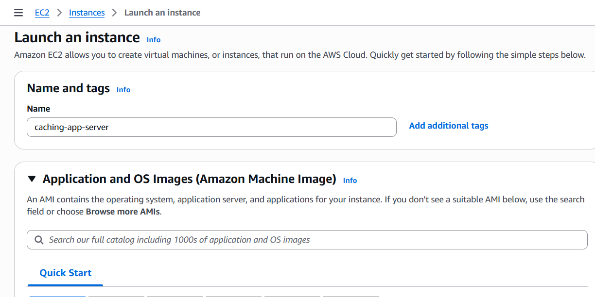
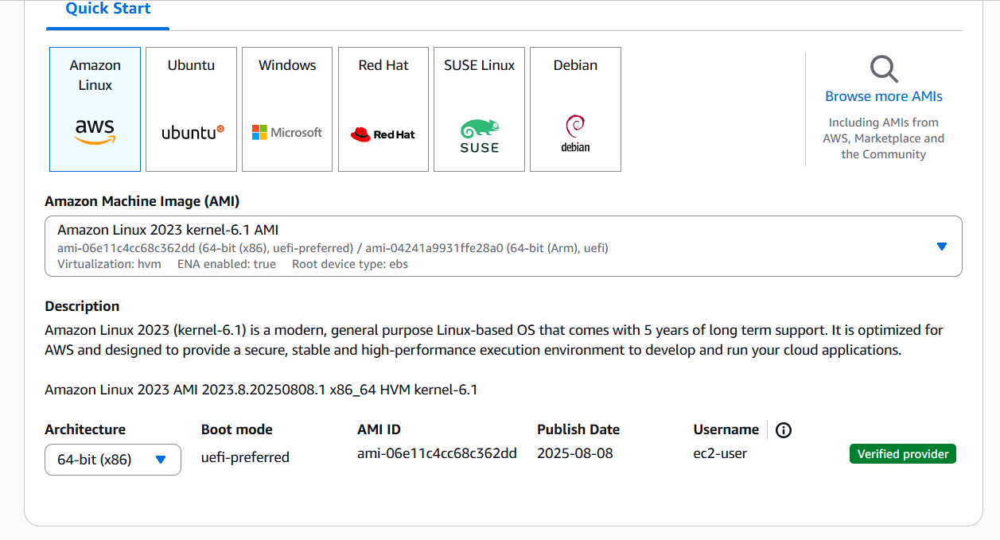
Instance Type
-
Select instance type:
- Instance type:
t3.micro - vCPUs: 2
- Memory: 1 GiB
- Instance type:
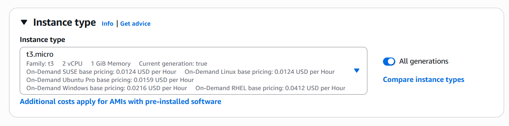
t3.micro is sufficient for this workshop. In production, choose instance types based on your application’s CPU and memory requirements.
Key Pair
-
Configure key pair for SSH access:
- Key pair: Create new or select existing
- If creating new: Key pair name:
caching-workshop-key
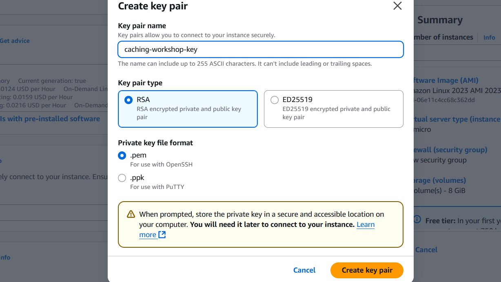
Download and securely store your private key file. You’ll need it to SSH into the instance.
Step 3: Configure Network Settings
VPC and Subnet
-
Configure network settings:
- VPC: Select your
caching-workshop-vpc - Subnet: Select a public subnet (for internet access)
- Auto-assign public IP: Enable
- VPC: Select your
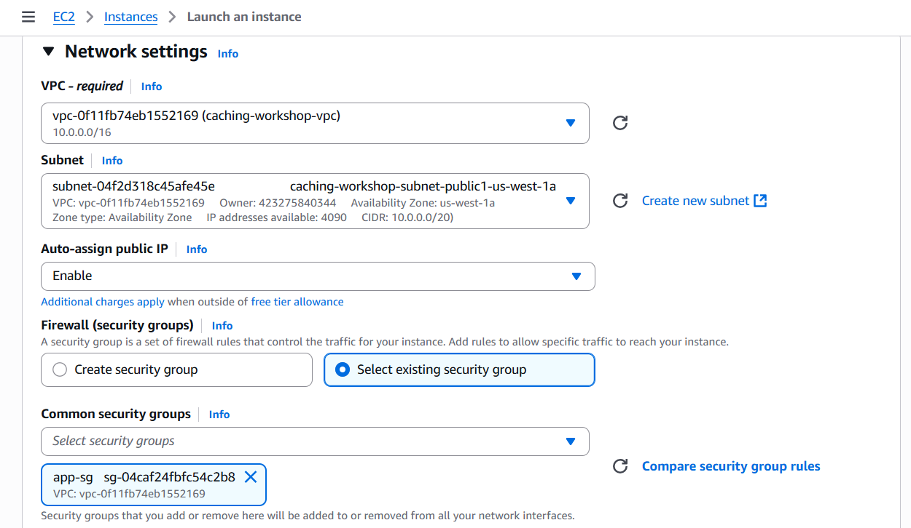
Security Group
-
Configure security group:
- Security group: Select existing
app-sg - Verify it allows HTTP (80), custom TCP (3000), and SSH (22)
- Security group: Select existing
Step 4: Configure Storage
-
Configure storage settings:
- Size: 8 GiB (default)
- Volume type: gp3
- IOPS: 3000
- Throughput: 125 MB/s
Step 5: Add User Data Script
Advanced Details
- Expand Advanced details section
User Data Script
- Add the following user data script to automatically install Node.js and dependencies:
#!/bin/bash
# Update system
yum update -y
# Install development tools
yum groupinstall -y "Development Tools"
yum install -y git
# Install Node.js using NodeSource repository
curl -fsSL https://rpm.nodesource.com/setup_18.x | bash -
yum install -y nodejs
# Install PM2 for process management
npm install -g pm2
# Create application directory
mkdir -p /home/ec2-user/caching-app
chown ec2-user:ec2-user /home/ec2-user/caching-app
# Install CloudWatch agent
yum install -y amazon-cloudwatch-agent
# Create log directory
mkdir -p /var/log/caching-app
chown ec2-user:ec2-user /var/log/caching-app
# Set up environment
echo 'export NODE_ENV=production' >> /home/ec2-user/.bashrc
echo 'export PATH=$PATH:/usr/bin' >> /home/ec2-user/.bashrc
# Log completion
echo "User data script completed at $(date)" >> /var/log/user-data.log
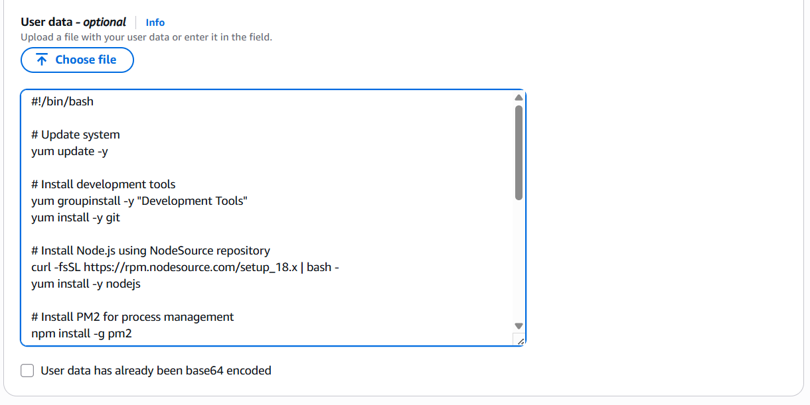
The user data script runs automatically when the instance first boots. It installs Node.js, PM2, and other necessary tools.
Step 6: Create IAM Role for EC2
Navigate to IAM Console
- Open IAM Console in a new tab
- Click Roles → Create role
Configure Trusted Entity
- Select trusted entity:
- Trusted entity type: AWS service
- Service: EC2
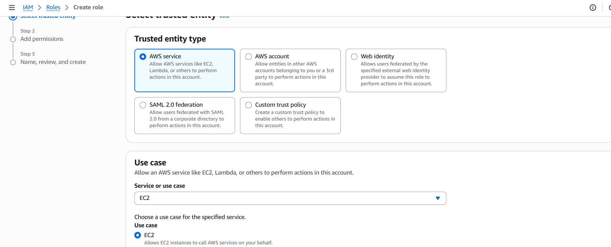
- Click Next
Attach Permissions
-
Search for and attach the following policies:
- AmazonDynamoDBFullAccess
- AmazonElastiCacheFullAccess
- CloudWatchAgentServerPolicy
In production, use more restrictive policies following the principle of least privilege. Create custom policies that only allow access to specific resources.
- Click Next
Name and Create Role
- Configure role details:
- Role name:
CachingAppRole - Description:
IAM role for caching application server
- Role name:

- Click Create role

Step 7: Attach IAM Role to Instance
Modify IAM Role
- Return to the EC2 launch configuration
- In Advanced details, find IAM instance profile
- Select
CachingAppRole

If the role doesn’t appear in the dropdown, wait a few minutes for it to propagate, or refresh the page.
Step 8: Review and Launch
Review Configuration
-
Review all instance settings:
-
Verify:
- Instance name and AMI
- Instance type and key pair
- Network and security configuration
- Storage settings
- IAM role attachment
Launch Instance
- Click Launch instance
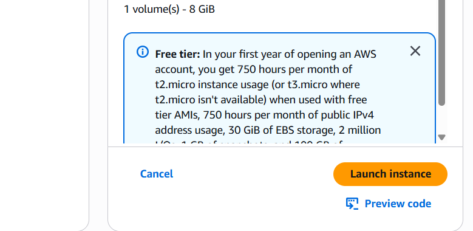
Instance launch takes 2-3 minutes. The user data script will run automatically during the first boot, which may take an additional 3-5 minutes.
Step 9: Monitor Instance Launch
Check Instance Status
- Navigate to EC2 Dashboard → Instances
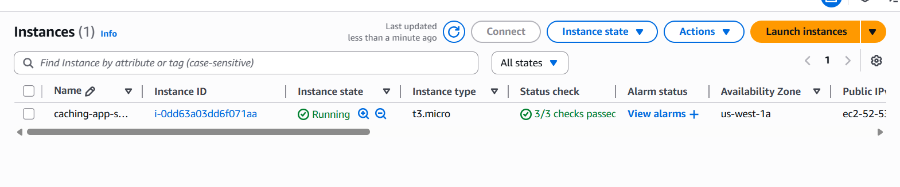
- Monitor the instance status:
- Instance State: Running
- Status Checks: 2/2 checks passed
View Instance Details
-
Click on the instance to view details:
-
Note the Public IPv4 address and Private IPv4 address:
- Public IP: For SSH access from internet
- Private IP: For internal VPC communication
Step 10: Connect to Instance
For Windows users: Install MobaXterm for easy SSH access with built-in file transfer and terminal features.
Download MobaXterm: MobaXterm Website
SSH Connection
- Connect to your instance by MobaXterm
Verify Installation
- Check that Node.js and npm are installed:
# Check Node.js version
node --version
# Check npm version
npm --version
# Check PM2 installation
pm2 --version
# Check if application directory exists
ls -la /home/ec2-user/caching-app
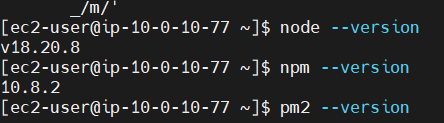
Check User Data Logs
- Verify the user data script completed successfully:
# Check user data logs
sudo cat /var/log/user-data.log
# Check cloud-init logs
sudo cat /var/log/cloud-init-output.log
Step 11: Configure AWS CLI (Optional)
Install AWS CLI
- Install AWS CLI v2:
# Download AWS CLI
curl "https://awscli.amazonaws.com/awscli-exe-linux-x86_64.zip" -o "awscliv2.zip"
# Install unzip if not available
sudo yum install -y unzip
# Unzip and install
unzip awscliv2.zip
sudo ./aws../../install
# Verify installation
aws --version
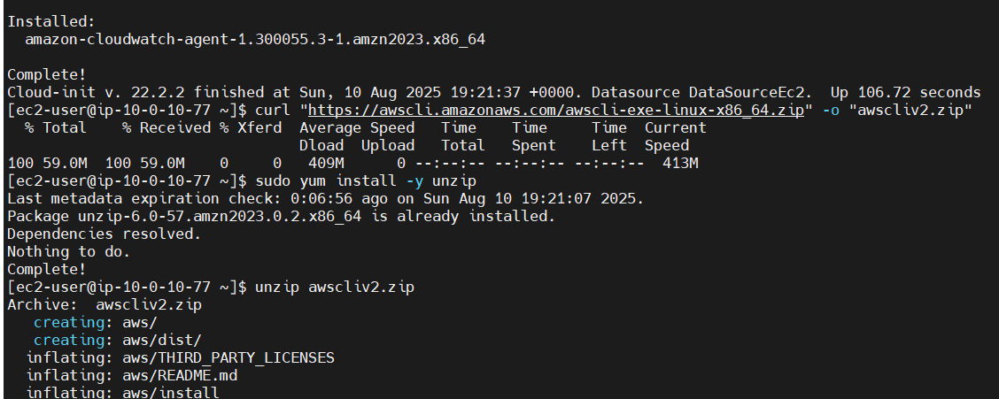
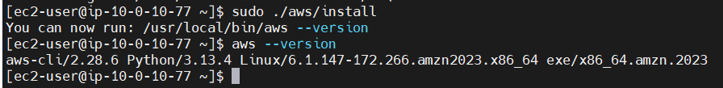
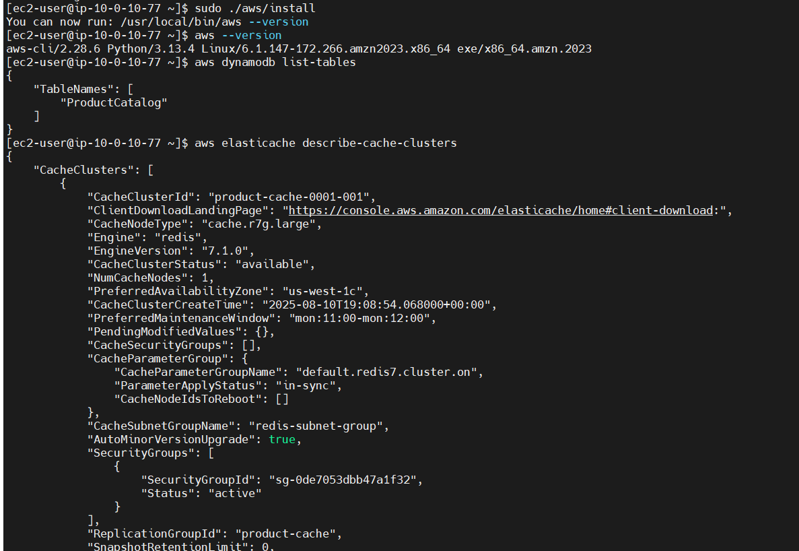
Test AWS Permissions
- Test that the IAM role is working:
# Test DynamoDB access
aws dynamodb list-tables
# Test ElastiCache access
aws elasticache describe-cache-clusters
# Check current identity
aws sts get-caller-identity
Step 12: Document Instance Information
Record the following information for application configuration:
EC2 Instance Information
- Instance ID:
i-xxxxxxxxxxxxxxxxx - Instance Type:
t3.micro - Public IP:
xx.xx.xx.xx - Private IP:
10.0.x.x - Security Group:
app-sg - IAM Role:
CachingAppRole
Network Configuration
- VPC:
caching-workshop-vpc - Subnet: Public subnet
- Availability Zone:
us-east-1a(or your selected AZ)
Troubleshooting Common Issues
Issue: Cannot SSH to Instance
Possible Causes:
- Security group not allowing SSH
- Wrong key pair or permissions
- Instance not in public subnet
Solutions:
- Verify security group allows SSH (port 22) from your IP
- Check key pair permissions:
chmod 400 your-key.pem - Ensure instance is in public subnet with public IP
Issue: User Data Script Failed
Possible Causes:
- Network connectivity issues
- Package installation failures
- Insufficient permissions
Solutions:
- Check
/var/log/cloud-init-output.logfor errors - Manually run installation commands
- Verify internet connectivity from instance
Issue: AWS CLI Commands Fail
Possible Causes:
- IAM role not attached
- Insufficient permissions
- Region configuration issues
Solutions:
- Verify IAM role is attached to instance
- Check IAM role has required policies
- Set AWS region:
aws configure set region us-east-1
Security Best Practices
Instance Security
- SSH Key Management: Secure private key storage
- Security Groups: Least-privilege access rules
- IAM Roles: Service-specific permissions only
- System Updates: Regular security patches
Network Security
- Public Subnet: Only for instances requiring internet access
- Private Communication: Use private IPs for internal traffic
- Security Groups: Act as virtual firewalls
Next Steps
Your EC2 instance is now ready for application deployment! You have:
✅ EC2 Instance running Amazon Linux 2023
✅ Node.js and npm installed and configured
✅ PM2 for production process management
✅ IAM Role with necessary AWS permissions
✅ Network Configuration for multi-layer caching access
✅ SSH Access for management and deployment
Instance Capabilities:
- Node.js Runtime: Ready for application deployment
- AWS SDK Access: Can interact with DynamoDB, ElastiCache, and DAX
- Process Management: PM2 for production-grade application hosting
- Monitoring: CloudWatch agent for metrics and logs
Keep your instance secure by regularly updating packages and following AWS security best practices.
Next, we’ll deploy our multi-layer caching application to this instance.